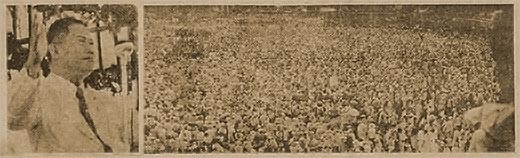
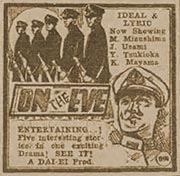

|
j
a v a s c r i p t |
June 18, 1944 Tribune: "P.I. Independence a blessing" — says Aquino in a rally at his hometown in Tarlac. A picture shows a crowd of 50,000.

"Foe battleship damaged off Tinian Island" by "long range guns of the Japanese fortress in Tinian" — where were their planes? The Tribune has NOT A WORD about the bombing of Japan or the landing on Saipan. The Sunday Tribune news weekly for provincial readers distributed today has not a word on Saipan nor the Task Force raids on the Bonins, Marianas, or Kuriles. Hitler's long-promised retaliation: "Pilotless aircraft attack England with new-type bomb."

Now Showing
Saw the Japanese picture On the Eve this morning. Very few people were in the theater despite the Japanese trick of showing the film simultaneously in two leading theaters and playing old Tagalog films in all the rest. It's about how five young naval surgeons spend their last night before leaving for the front. The first spent all night trying to save a little girl. He had to give his own blood as his was the only Type 'O' in the large hospital. The second visits his father's grave and a temple, falling asleep there until the morning. The third spends it at a music hall listening to Chopin, his favorite music. The fourth takes a walk under the moonlight with his sister, like they used to do when their parents were alive. He thanks her for sacrificing herself for him, even to the point of delaying marriage. Then he plays matchmaker and gets her engaged before the night is over. He makes them promise to marry after he leaves. The fifth, I can't seem to recall. I must have fallen asleep. Anyway, none of them thought of having fun or spending their last free night with a girlfriend. It's a pretty good cross-section of all Japanese films today — and Manila has seen them all. Most of the few viewers were Japanese. The colossal box-office failure of "Dawn of Freedom" is suggestive of the general apathy of the public for things Japanese. I had expected it to break all records. Yesterday at the Life Theater, Guinto gave a significant speech at an induction rally for new N.A. leaders. About rice, he said there's no more to be had ... better stock up on any substitutes. About recent air raid drills, the Japanese were watching and will mercilessly punish anyone for future infractions. He hinted that real air raids might be coming. "Do not do anything rash" if the Americans land in Mindanao, he warned. The rumor this afternoon is that the banks were ordered to stop all check payments in a futile attempt to stop inflation. |
|
|
|
|